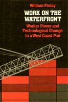

Ethnographic account of how longshoremen in California have been affected by recent technological changes in the industry
Ethnographic account of how longshoremen in California have been affected by recent technological changes in the industry


 Ethnographic account of how longshoremen in California have been affected by recent technological changes in the industry
Ethnographic account of how longshoremen in California have been affected by recent technological changes in the industry

|  |
Work on the WaterfrontWorker Power and Technological Change in a West Coast PortWilliam Finlaycloth EAN: 978-0-87722-523-2 (ISBN: 0-87722-523-0) |
In this ethnographic account of longshoremen in California, William Finlay examines how they have been affected by recent technological changes in this industry. Focusing on the workers in Local 13 (Los Angeles-Long Beach) of the ILWU, he finds that despite the profound impact of new technologies, in particular of containerization, these workers have retained much of their influence over production, their autonomy at work, and their skill on the job.
Using data collected from interviews and participant observation, Finlay provides a first-hand view of a union, the International Longshoremen’s and Warehousemen’s Union, about which there has been considerable speculation and discussion but which has been quite difficult for outsiders to penetrate. During his research, Finlay worked as a longshoreman, accompanied crane operators loading and unloading ships, observed union business agents on their waterfront rounds, and attended negotiation meetings.
Contrary to many contemporary arguments concerning the negative impact of technological innovation at the workplace, Finlay finds that in longshoring the new technologies have resulted in the increased demand for skilled workers and in fresh opportunities for workers to assert their control of production. Work on the Waterfront examines local unionism in action and discusses the factors that produce on-the-job bargaining in longshoring and other lines of work.
William Finlay is Assistant Professor of Sociology at the University of Iowa.
Labor Studies and Work
Sociology
Political Science and Public Policy
Labor and Social Change, edited by Paula Rayman and Carmen Sirianni.
Labor and Social Change, edited by Paula Rayman and Carmen Sirianni, includes books on workplace issues like worker participation, quality of work life, shorter hours, technological change, and productivity, as well as union and community organizing and ethnographies of particular occupations.
© 2015 Temple University. All Rights Reserved. This page: http://www.temple.edu/tempress/titles/526_reg.html.